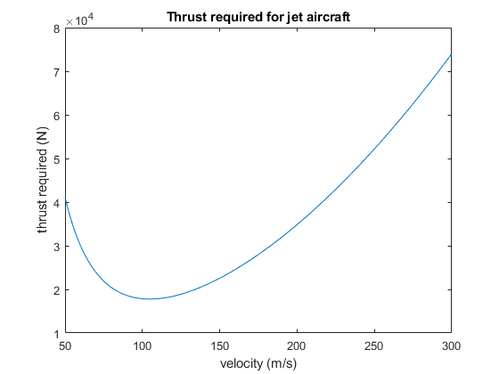
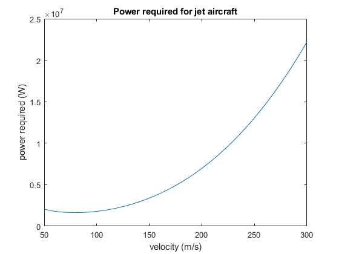
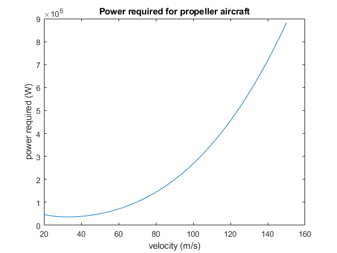
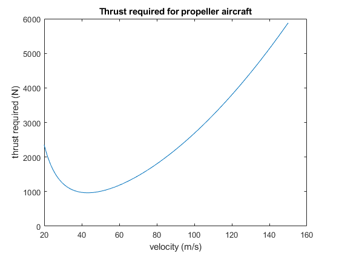

Steps = 1000;
Vjet = linspace(50,300,1000);
Vprop = linspace(20,150,1000);
Mjet = 33100;
Wjet = 9.81 * Mjet;
Ajet = 88.2;
CD0jet = 0.015;
DragConstantjet = 0.05;
Mprop = 1315;
Wprop = 9.81 * Mprop;
Aprop = 16.3;
CD0prop = 0.026;
DragConstantprop = 0.054;
R = 1.225;
Thrustjet = zeros(1,Steps);
Powerjet = zeros(1,Steps);
Thrustprop = zeros(1,Steps);
Powerprop = zeros(1,Steps);
for x = 1:Steps
Datajet = LandDfromV(Vjet(x),Wjet,CD0jet,DragConstantjet,Ajet,R);
Thrustjet(x) = Wjet / (Datajet(1) / Datajet(2));
Powerjet(x) = Vjet(x) * Thrustjet(x);
Dataprop = LandDfromV(Vprop(x),Wprop,CD0prop,DragConstantprop,Aprop,R);
Thrustprop(x) = Wprop / (Dataprop(1) / Dataprop(2));
Powerprop(x) = Vprop(x) * Thrustprop(x);
end
figure();
plot(Vjet, Thrustjet);
title("Thrust required for jet aircraft");
xlabel("velocity (m/s)");
ylabel("thrust required (N)");
figure();
plot(Vjet, Powerjet);
title("Power required for jet aircraft");
xlabel("velocity (m/s)");
ylabel("power required (W)");
figure()
plot(Vprop,Powerprop)
title("Power required for propeller aircraft");
xlabel("velocity (m/s)");
ylabel("power required (W)");
figure()
plot(Vprop,Thrustprop)
title("Thrust required for propeller aircraft");
xlabel("velocity (m/s)");
ylabel("thrust required (N)");
   